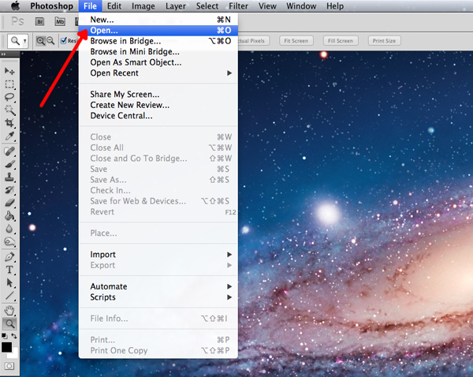
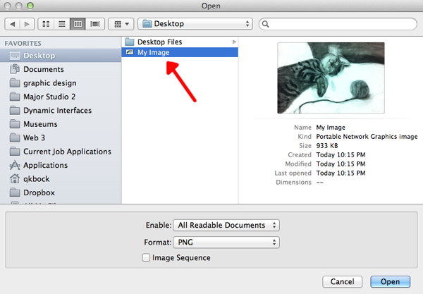
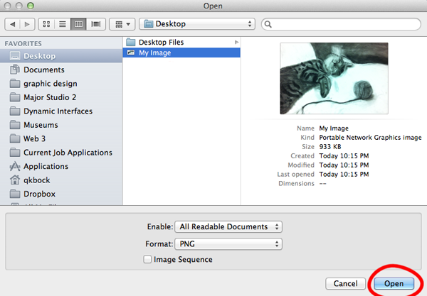
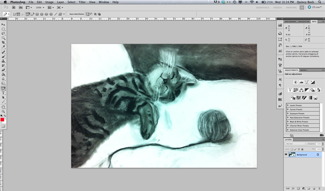

How to Open an Image in Photoshop
- Launch Photoshop
- To launch Photoshop navigate to your Applications folder and double click on the Photoshop application icon.
- Find "Open" in the Menu Bar
- Under "File" in the Menu Bar, click "Open." ("Command" + "o")
- 
- Navigate to your image
- A window will pop up which will allow you to navigate through all the folders and files on your computer. Go to the folder that contains the file you wish to open and click once on it.
- 
- Open your file
- With the file selected press the (now blue) "Open" button in the lower right corner of the window.
- 
- Your file is now open
- It will appear in the main work space of Photoshop.
- 
You may proceed to resize your image.